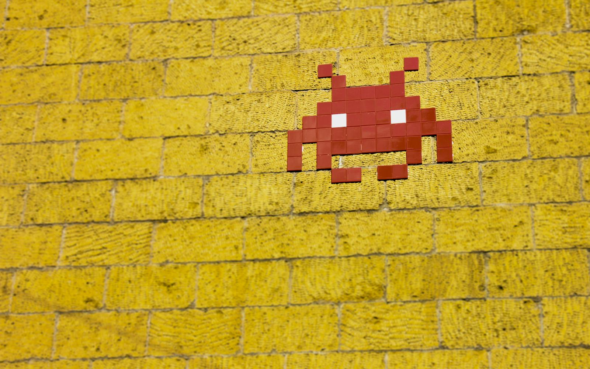
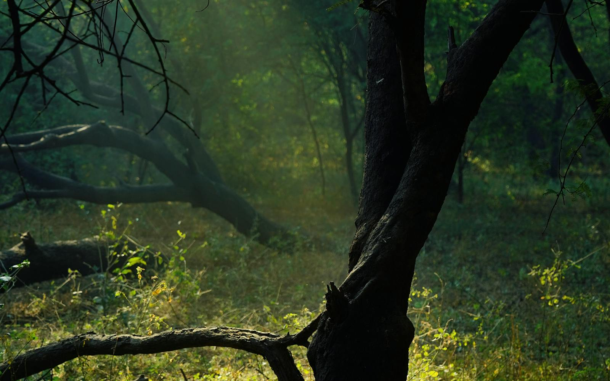
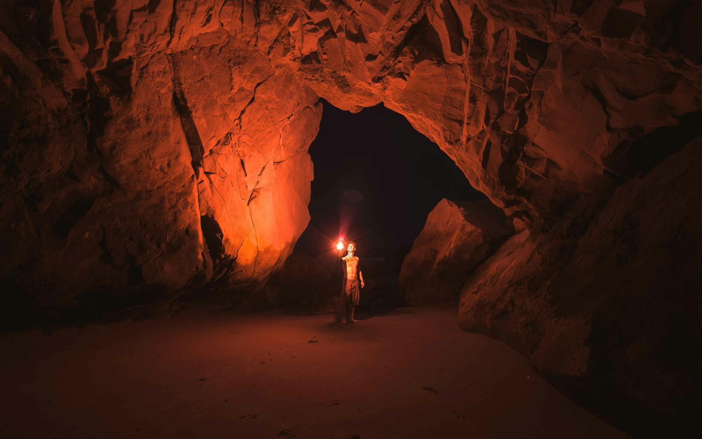
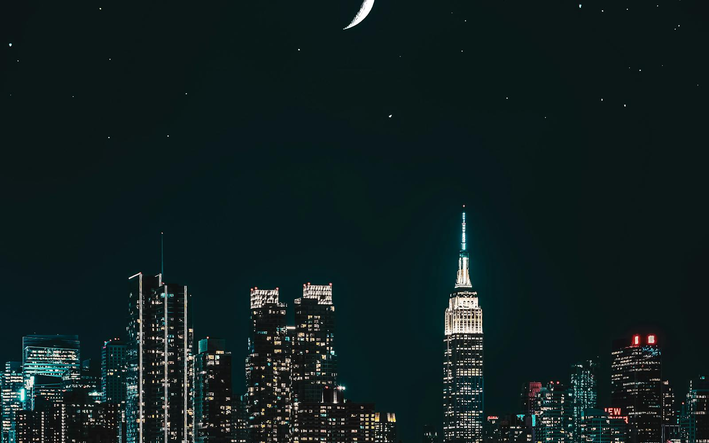
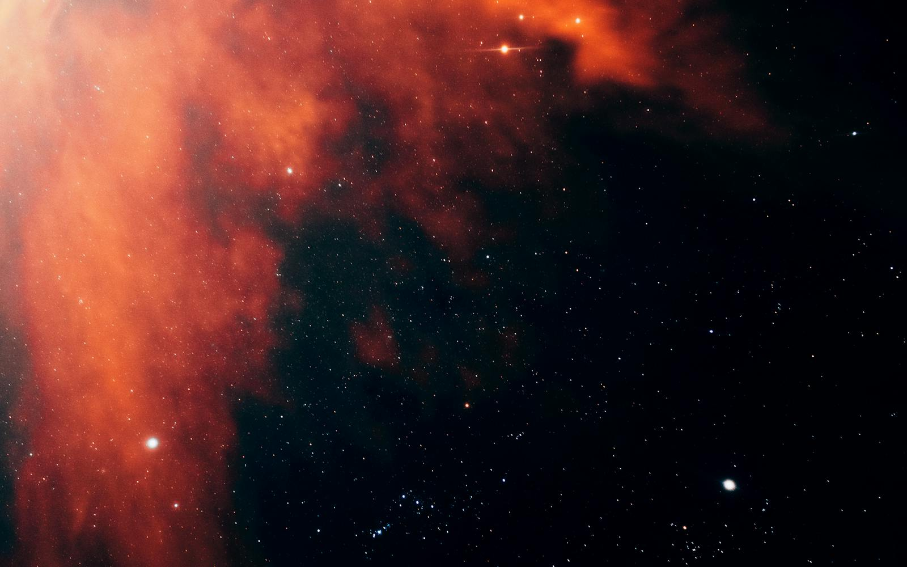
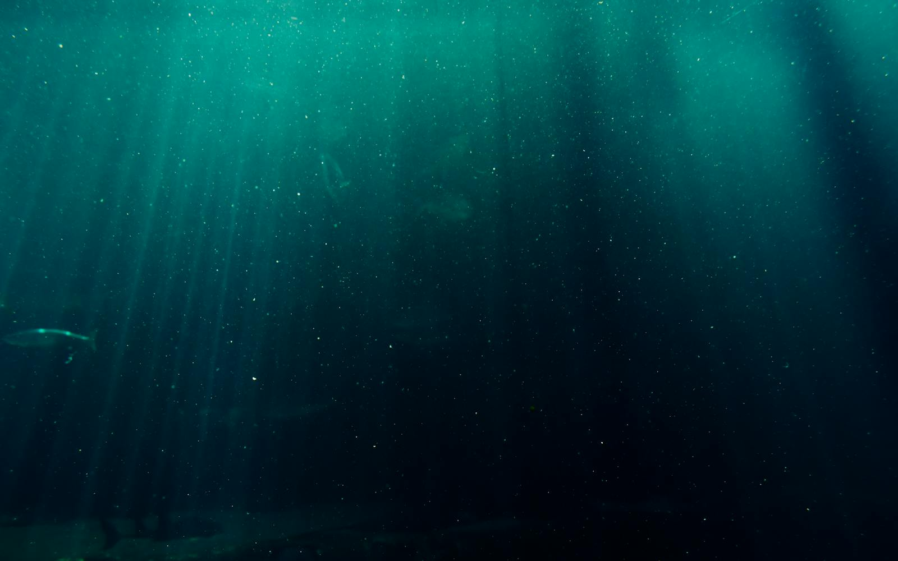
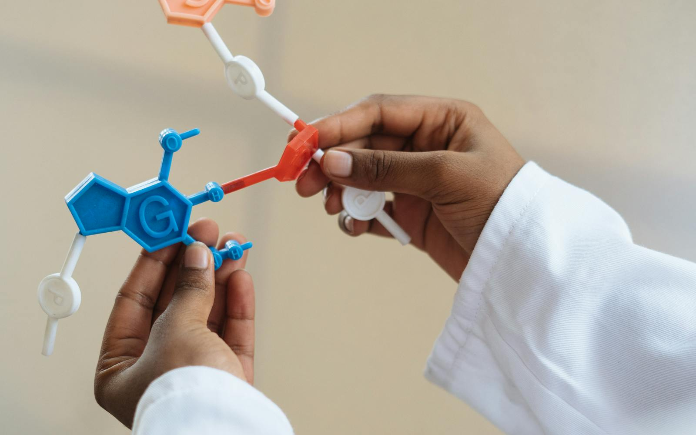

Young learners are full of imagination — but the tools we give them are flat, passive, and forgettable.
Related concepts live in adjacent rooms. Important concepts get larger spaces. The spatial layout mirrors your understanding.

Each theme transforms the entire environment — textures, lighting, particles, NPC style, ambient atmosphere.





Obsidian plugin + web app. Everything runs on free tiers.
| Spec | Target |
|---|---|
| Map generation time | Under 60 seconds |
| Map load time | Under 10 seconds |
| Frame rate | 30+ FPS (modern laptop) |
| NPC response latency | Streaming in <2 seconds |
| Config size | 10-50KB JSON |
| Max concepts | ~50 per map |
| Browser support | Chrome / Firefox / Edge |
| Infra cost | $0 (free tiers) |
Study tools help you review. Loci helps you remember — by turning knowledge into space.
| Approach | Spatial Memory | 3D / Immersive | AI-Powered | From Own Notes | Explorable |
|---|---|---|---|---|---|
| Anki / Flashcards | × | × | ~ Basic | ✓ | × |
| Obsidian Graph View | ~ 2D only | × | × | ✓ | ~ Pan/zoom |
| Minecraft Education | ✓ | ✓ | × | × Manual | ✓ |
| Mind Mapping Tools | ~ Flat | × | ~ Some | ✓ | × |
| Loci | ✓ Full 3D | ✓ Voxel | ✓ LLM | ✓ Obsidian | ✓ FPS |
The Method of Loci activates the hippocampus — the brain's spatial navigation and memory formation centre.

Watch a set of Obsidian notes about cell biology transform into a walkable 3D mind palace in under 60 seconds.
The science is clear. The technology is ready. The experience is magical.